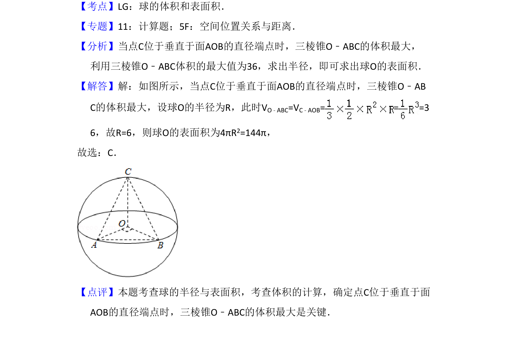

考点：球的表面积 三棱锥体积 最值问题
当三棱锥体积最大时，利用几何关系求球半径，进而计算球的表面积。

📄 原 PDF 第 7 页：
素材/真题/吉林/2008-2024·（吉林）数学高考真题/2015年高考数学试卷（文）（新课标Ⅱ）（解析卷）.pdf
10．（5分）已知A，B是球O的球面上两点，∠AOB=90°，C为该球面上的动点， 若三棱锥O﹣ABC体积的最大值为36，则球O的表面积为（ ） A．36πB．64πC．144πD．256π
【考点】LG：球的体积和表面积．菁优网版权所有 【专题】11：计算题；5F：空间位置关系与距离． 【分析】当点C位于垂直于面AOB的直径端点时，三棱锥O﹣ABC的体积最大， 利用三棱锥O﹣ABC体积的最大值为36，求出半径，即可求出球O的表面积． 【解答】解：如图所示，当点C位于垂直于面AOB的直径端点时，三棱锥O﹣AB C的体积最大，设球O的半径为R，此时VO﹣ABC=VC﹣AOB= = =3 6，故R=6，则球O的表面积为4πR2=144π， 故选：C． 【点评】本题考查球的半径与表面积，考查体积的计算，确定点C位于垂直于面 AOB的直径端点时，三棱锥O﹣ABC的体积最大是关键．